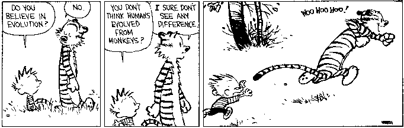
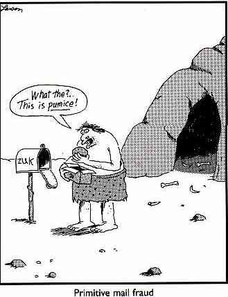

Fossile Hominiden: Humor
- Männer, Frauen, Irak, Kreationismus und all das schwere Zeug
- Ein humorvoller Artikel von Bill McClellan der St. Louis Post-Dispatch.
- Aprilscherz!
- Haben Neandertaler Musik gemacht?
Der April-Scherz-Artikel von 1997 der Discover Magazine über die Entdeckung neandertaler Musikinstrumente ist ziemlich lustig. Noch lustiger ist die Tatsache, dass das Institute for Creation Research darauf hereingefallen ist. - Feuer-Hilfe-Schalter
- Zwei Varianten einer Satire über den modernen Computer-Hilfschalter, wo überarbeitete Mitarbeiter versuchen, ahnungslose Benutzer zu helfen.
- Schnelle Spitzhaken herstellen
- Eine Satire über den universell verhassten „GELD SCHOHN VERDIENEN"-Beitrag und ähnliche Pyramidenbetrügereien, die das Internet infizieren.
- Brief vom Smithsonian
- Eine fiktive Antwort des Smithsonian an jemanden, der behauptet, ein Hominiden-Fossil gefunden zu haben.
- Frank und Ernest über die menschliche Evolution

Antikes Tech Support
Das Problem mit technischem Support reicht weit zurück in die Zeit vor der industriellen Revolution, als primitive Stammesmitglieder einen Rhythmus auf Trommeln schlugen, um sich zu verständigen:
Dieses Feuer half mir. Me Groog
Me Lorto Hilfe Feuer funktioniert nicht
Sie haben Feuerstein und Stein?
Ugh
Haben Sie sie zusammen geschlagen?
Ugh
Was ist passiert?
Feuer statt Arbeit
(seufz) Funken machen?
Ugh
Sie haben Funkenmaterial und Anzündholz in der Nähe eines Funken?
Ohhhhhhhhhhh.
Dieses Feuer half. Mir Groog
Me Lorto. Hilfe. Feuer statt Arbeit.
Sie haben Feuerstein und Stein?
Ugh
Haben Sie sie zusammen geschlagen?
Ugh
Was ist passiert?
Feuer statt Arbeit
(seufz) Funken machen?
Kein Funke, kein Feuer, ich bin verwirrt. Feuerwerk gestern.
*sigh* Sie ändern das Gestein?
Ich ändere nichts
Bist du dir sicher?
Ich mache eine kleine Änderung. Der Stein ist heiß, also tauche ich meine Hand im Bach ein, damit der Stein meine Hand nicht verbrennt. Eine kleine Änderung, die Lorto nicht daran hindern sollte, Feuer zu machen.
*Holt sich den Stock und geht zu Lortos Höhle*
*HAMM*HAMM*HAMM*HAMM*
Schnelle Stachelhämmer herstellen
In articleEs ist neuerdings Beweismaterial ans Licht gekommen, das darauf hindeutet, dass Ketenschreiben im Pyramidenstil Dave Rhodes um ein beträchtliches Maß vorausgegangen sein könnte. Paläontologen haben kürzlich Folgendes entschlüsselt, das an einer Höhlenwand an den Hängen des Kilimanjaro gemalt war.
MACH SPIKIGE CLUBS SCHNELL!!!
Hallo, Nicht-Stammesmitglied. Urk Name Urk. Vor vielen Monden war Urk in schlechter Lage. Urk wurde von Thag aus der Höhle vertrieben. Thag war größer als Urk, Thag nahm Urks spikigen Club, Urka (Urk-Frau). Urk konnte Hirsche nicht töten, musste Blätter und Beeren essen. Urk floh vor Wölfen.
Heute ist Urk der große Häuptling. Urk hat die beste Höhle, viele Frauen, viele spikige Clubs. Urk sagt, wie es geht.

WAS MACHEN: Mache einen spikigen Club und bring ihn in die Höhlenplätze unten. Füge deinen eigenen Höhlenplatz am Ende der Liste hinzu, nimm den Höhlenplatz von oben weg. Lege neue Botschaften an die Wände vieler Höhlen. Warte. Bald kommen viele Clubs! Das ist kein Verbrechen! Urk fragt den Schamanen, die Götter sagen Ja.HIER LISTE:
1) Urk
Erste Höhle
Olduvai-Schlucht
few) Thag (nicht dieser Thag, anderer Thag)
alter toter Baum
am See, der wie ein Mammut geformt ist
few) Og
großer Fels mit Überhang
nahe dem Schweinejagdweg
Many) Zog
Fluss-Höhlen
wo der Fluss auf das große Wasser trifft
Urk hofft, dass das Nicht-Stammesmitglied tut, was Urk sagt, dass es tun soll. Das ist der einzige Weg, wie es funktioniert.
(c) Dave Hemming 1998. Verteile wie du willst, aber behalte meinen Namen darauf.
Diese Seite ist Teil der Fossil-Hominiden FAQ im TalkOrigins-Archiv.
Startseite |
Arten |
Fossilien |
Kreationismus |
Lektüre |
Referenzen
Illustrationen |
Was ist neu |
Feedback |
Suche |
Links |
Fiktion
http://www.talkorigins.org/faqs/homs/humor.html, 31.10.2003
Copyright © Jim Foley
|| E-Mail an mich